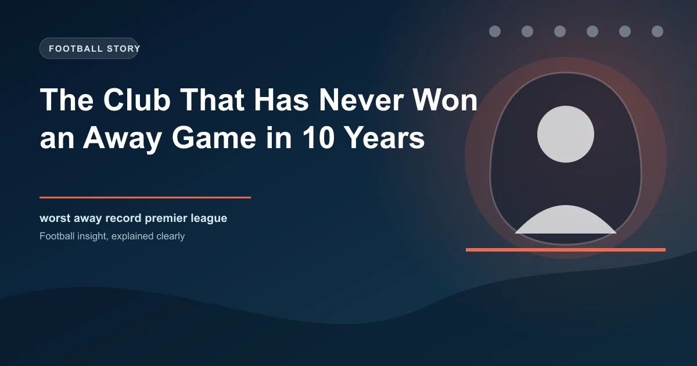

Football is a game of fine margins, but some margins are wider than others. While elite clubs treat away fixtures as opportunities, a surprising number of Premier League sides have gone entire seasons without winning a single game on the road. The phenomenon of away-day struggles is one of football's most persistent puzzles — and the numbers are more dramatic than most fans realise.
Between April 1971 and November 1972, Watford went 32 consecutive away league games without a win — a drought spanning 589 days. In the Premier League era, multiple clubs have finished a 38-game season with zero away victories. Some were relegated in disgrace. Others survived against all logic. Here is the full story of football's most brutal away-day curse.
Since the Premier League expanded to 38 games in 1995-96, five clubs have completed a season without a single away win. Here is how each one fared:
| Season | Club | Away W | Away D | Away L | Final Position |
|---|---|---|---|---|---|
| 2007-08 | Derby County | 0 | 3 | 16 | 20th (Relegated) |
| 1992-93 | Leeds United | 0 | 4 | 17 | 17th (Safe) |
| 2004-05 | Norwich City | 0 | 6 | 13 | 19th (Relegated) |
| 1999-00 | Coventry City | 0 | 7 | 12 | 14th (Safe) |
| 2003-04 | Wolves | 0 | 5 | 14 | 20th (Relegated) |
Derby County's 2007-08 campaign stands as the worst in Premier League history. The Rams finished with just 11 points — a record low that still stands. Their three away draws came against Newcastle, Fulham, and Bolton. They lost the other 16 road trips, conceded 89 goals across the season, and were relegated by March.
Key Stat: Derby County's 11 points in 2007-08 remains the lowest points tally in Premier League history. They won just one game all season — a 1-0 home victory over Newcastle in September.
Perhaps the strangest entries on that list are Leeds United (1992-93) and Coventry City (1999-00). Both teams failed to win a single away game yet escaped relegation.
Leeds — reigning champions just two years earlier — finished 17th with 41 points. Their survival relied on a fortress-like home record: 11 wins, 3 draws, and just 5 defeats at Elland Road. Coventry went one better, finishing 14th under Gordon Strachan despite their away-day woes. Their seven away draws were crucial, but it was a strong home record (eight wins) that kept them in the division.
These cases prove that a dire away record does not automatically mean relegation — but you need an exceptional home record to compensate.
Why do some clubs fall into prolonged away-day slumps? Sunderland's record between 2009 and 2019 offers a telling example. Over that decade, the Black Cats won just 22% of their away fixtures — a rate that contributed to two relegations and a near-decade of bottom-half finishes.
Sports psychologists point to several factors: travel fatigue, unfamiliar surroundings, hostile atmospheres, and — critically — a loss of confidence that becomes self-perpetuating. Once a squad begins to expect disappointment on the road, the fear of failure replaces the instinct to attack.
Teams that break away slumps typically do so with a single unexpected result — a 0-0 draw away to a top side, or a smash-and-grab 1-0 win. That one result resets the psychological clock. This is why bettors should watch for improving defensive performances, not just results, when assessing a struggling away side.
How do clubs end a run of away games without a win? For most, it comes from defensive solidity first, attacking confidence second. Wolves in 2003-04 went 19 away league games without a win before finally beating — ironically — Aston Villa on the final day of the season. But by then, relegation was already confirmed.
Watford's 32-game streak, one of the longest in English football history, finally ended with a 1-1 draw at Preston in November 1972. Notice the pattern — the curse usually breaks with a draw, not a win. Teams stop the rot before they turn it around.
For bettors, away form is one of the most mispriced factors in football. Bookmakers tend to overcorrect for home advantage, pricing away wins at shorter odds than the data justifies. Here is how to use away form data profitably:
Teams with terrible away records often set up defensively. The draw is systematically undervalued in these fixtures, particularly when the away side has shown any defensive organisation.
When a struggling away side faces a mid-table team with nothing to play for, the Double Chance (away win or draw) market often offers excellent value — even for teams with poor road form.
A team that has not won away in ten years will likely sit deep. If they hold out until the 60th minute, in-play odds on the draw lengthen significantly. This is the moment to strike.
The media loves a "cursed" away record, but a team that has drawn four of its last five away games is fundamentally different from one that has lost seven in a row. Look at recent performances, not season-long aggregates.
Remember: No away record lasts forever. The longer a club goes without winning on the road, the more statistically likely the win becomes — but only if underlying performance metrics (xG, shots on target, defensive organisation) support a turnaround.
Understanding away form is one of the most underutilised edges in football betting. While the casual bettor looks at league position, the sharp bettor studies the split between home and away performances — and stakes accordingly.
Check our free daily football predictions to apply these strategies.
Generate optimized accumulator combinations from today's AI-powered predictions. Set your target odds and get instant ticket suggestions.
Free Ticket Builder →